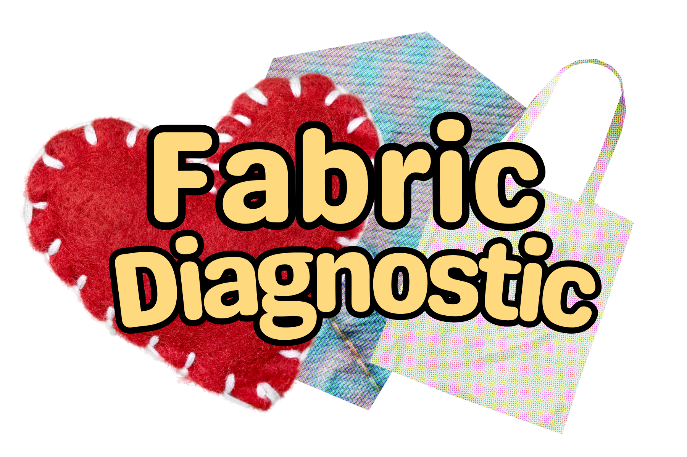

A Fabric Diagnostic Quiz
Quiz description, what its about and what they'll be learning

1. How often do you buy new clothes?
2. How much of your identity do you feel is expressed in the way that you dress?
3. How does the experience of shopping for clothes influence your mental health?
4. Which factors most strongly influence your shopping behavior (what and where you shop)?
5. When shopping for clothing, do you check the fiber content label?
6. When doing laundry, what size loads do you typically run — full loads, partial loads, or a mix of both?
7. What washing machine settings most effectively minimize microplastic shedding from clothing?
8. How long do you typically keep your clothes before donating or discarding them?
9. What do you typically do with the clothes you no longer wear?
10. What are your perceptions of fast fashion as a consumer?
11. Approximately what percentage of your wardrobe consists of thrifted or pre-owned items?
12. Looking through a rack of shirts, which aspect of the garment do you pay the most attention to?
13. Select the most accurate description of semi-synthetic fabrics.
14. Which of the following fabric textiles is NOT biodegradable?
Hint: Regenerative cellulose fabrics are derived from renewable materials like wood pulp, making them biodegradable synthetics